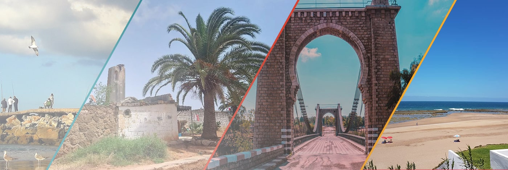
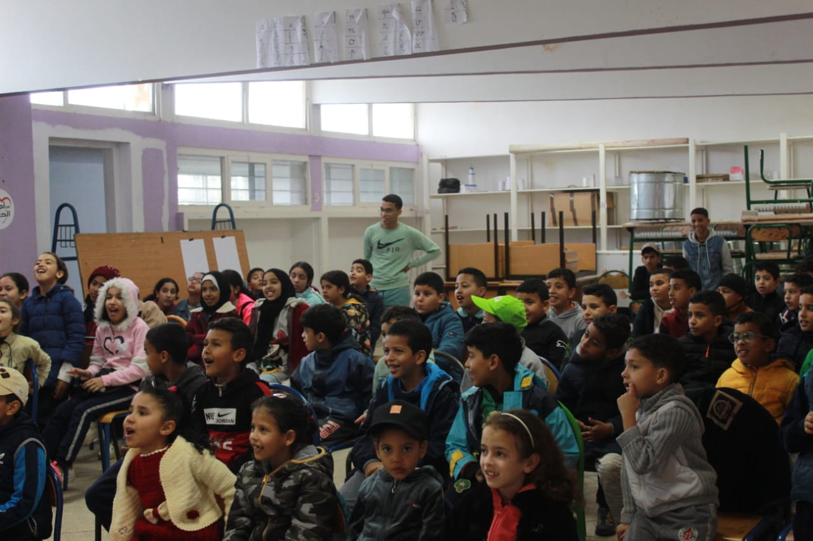
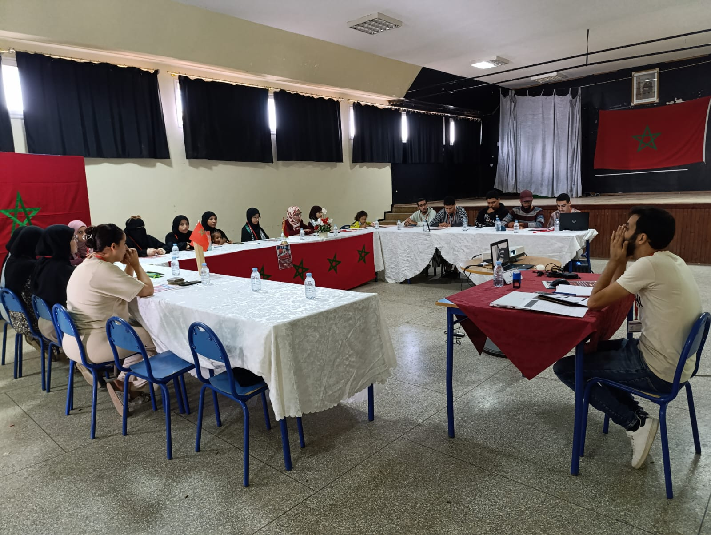

تاريخ المدينة
مدخل للمقالات التي تتناول تحولات المدينة وذاكرتها العامة دون أحكام أو مبالغات.
استكشفرحلة في ذاكرة مدينة تجمع بين البحر، التاريخ، الإنسان، والحكايات.
هذه الصفحة فضاء لتوثيق ذاكرة الصخيرات، من خلال مقالات وصور وحكايات وشهادات تحفظ أثر المكان والإنسان.
تصنيفات تساعد على ترتيب المحتوى القادم: مقالات، صور، شهادات، ومواد أرشيفية قابلة للتحديث لاحقاً.
مدخل للمقالات التي تتناول تحولات المدينة وذاكرتها العامة دون أحكام أو مبالغات.
استكشفمساحة مستقبلية لتوثيق وجوه تركت أثراً في المدينة أو في أحيائها ومؤسساتها.
استكشفقراءة للمدينة من خلال المدرسة، الشاطئ، الأحياء، والساحات التي تحفظ الحكايات.
استكشفأرشيف بصري ينتظر مساهمات السكان والفاعلين لجمع صور موثوقة ومؤرخة.
استكشفشهادات وحكايات شخصية تحفظ الذاكرة اليومية للمدينة بلغة قريبة ومسؤولة.
استكشفزاوية لتوثيق دور المدرسة والعمل الجمعوي في بناء روابط المجتمع المحلي.
استكشفبطاقات أولية في انتظار المقالات النهائية والصور المعتمدة.
مقال تمهيدي حول علاقة المدينة بالبحر والذكريات المرتبطة بالمكان.
قراءة المقالملف مخصص لتقديم سير موجزة ومحترمة لشخصيات سيتم توثيقها لاحقاً.
قراءة المقالمادة مستقبلية حول المدرسة كفضاء للتعلم والصداقة وبناء الذاكرة المشتركة.
قراءة المقالمحطات عامة بصياغة محايدة إلى حين توفير المعطيات التاريخية الدقيقة.
مرحلة مفتوحة للتوثيق اعتماداً على الشهادات والصور والمواد المتاحة.
زاوية لتوثيق علاقة السكان بالبحر والفضاءات الساحلية بعبارات دقيقة ومحايدة.
محور يجمع ذكريات الدراسة والأنشطة والأجيال التي مرت من فضاءات التعلم.
مسار لتوثيق المبادرات المحلية التي ساهمت في خدمة القرب والتضامن.
قراءة حاضرة للمدينة في انتظار مواد موثقة من السكان والفاعلين.
بطاقات لا تدعي تاريخاً غير موثق، بل تفتح الباب لتجميع الحكايات والصور المرتبطة بالأماكن.
فضاء للقاء والهدوء وذكريات العائلات، في انتظار صور وشهادات موثقة.
مكان يحتفظ بذاكرة الطفولة والتعلم والعلاقات التي رافقت أجيالاً متعددة.
حياة يومية وجوار وحكايات صغيرة تشكل جزءاً أساسياً من ذاكرة المدينة.
فضاء يمكن أن يحفظ ذاكرة الأنشطة واللقاءات والمبادرات الشبابية.
أماكن للتعبير والتبادل والتوثيق المستقبلي للأنشطة المحلية.
مساحات لعب ولقاء تحمل ذكريات رياضية واجتماعية قابلة للجمع والتوثيق.
تصميم مهيأ لنشر ملفات شخصية بعد التحقق من الأسماء والمعلومات والموافقة على النشر.
مساحة مخصصة لقصة موجزة ومحترمة بعد توفير المعطيات الموثقة.
يمكن إضافة صورة وسيرة قصيرة وشهادة مرتبطة بالمدينة لاحقاً.
بطاقة جاهزة للنشر عند توفر المحتوى الرسمي أو الشهادة المعتمدة.
هيكلة جاهزة لصور قديمة وحديثة ومقارنات قبل/بعد عند توفر المواد الأصلية.

صورة حديثة المدرسة
المدرسة

نشاط محلي
توثيق جمعويمكان مخصص لمقارنة بصرية عند توفر الصور.